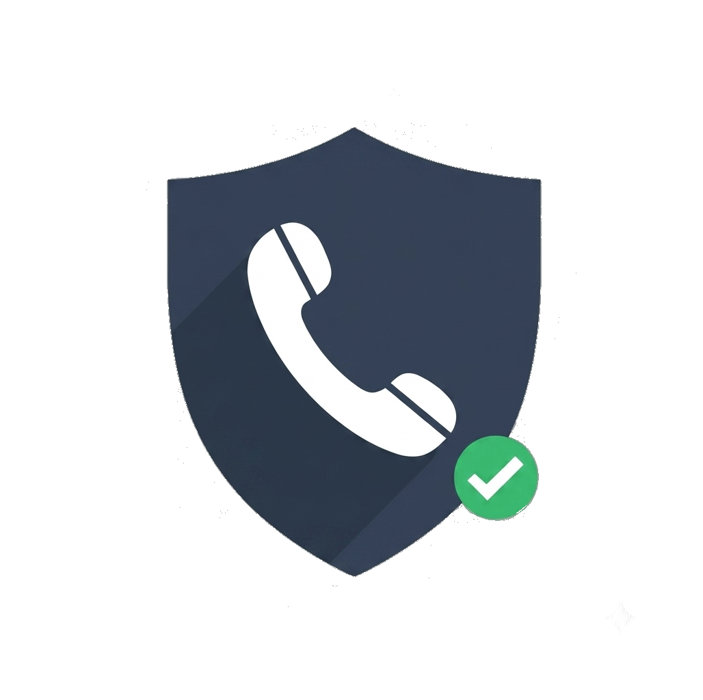
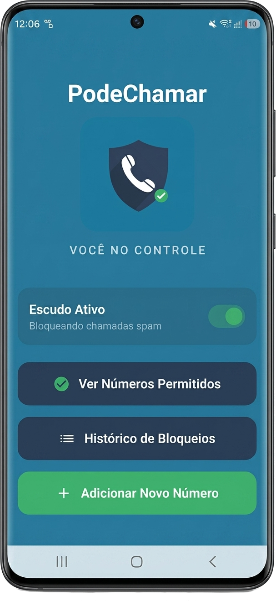
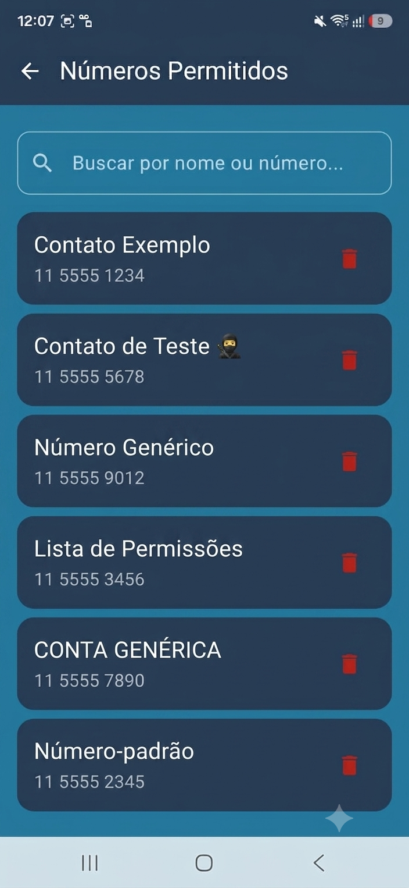
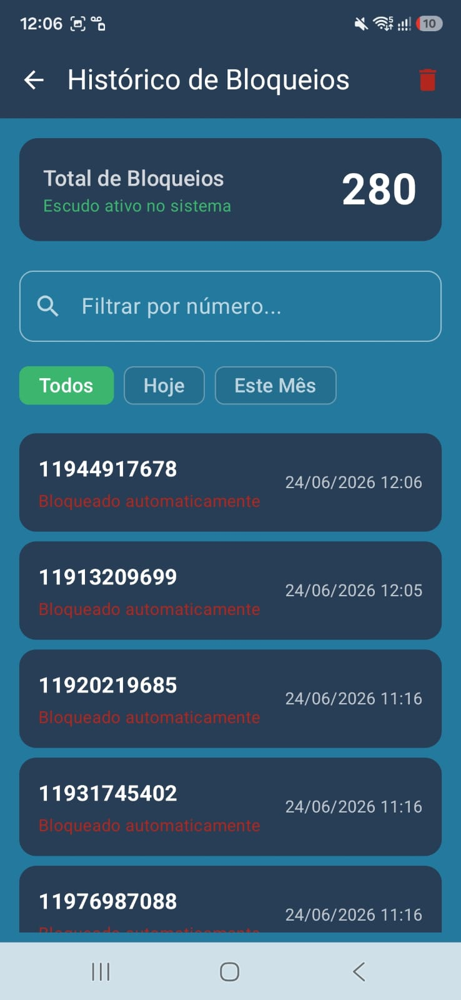

PodeChamarVocê decide quem pode ligar. O aplicativo bloqueia chamadas indesejadas
Adicione os números que você deseja permitir, somente eles poderão te ligar
Ideal para quem prioriza privacidade e controle.

Permita apenas números confiáveis.
O Aplicativo permite a criação de uma lista de contatos confiáveis que são os únicos autorizados a realizar chamadas para o dispositivo.

Bloqueie chamadas desconhecidas automaticamente.
Bloqueio automático de chamadas de números desconhecidos e indesejados para garantir a privacidade e o controle do usuário.
Visualize chamadas bloqueadas e permitidas.
O aplicativo mantém um registro detalhado das chamadas bloqueadas, permitindo que o usuário visualize quais foram os números podendo usar o filtro por dia ou mês.

Todos os dados ficam no seu dispositivo.
Oferece uma solução digital para gerenciar o acionamento de bloqueios e garantir que os dados de chamadas permaneçam protegidos no dispositivo.
Funciona em dispositivos Android.
Compatível com a maioria dos dispositivos Android, garantindo que os usuários possam aproveitar os recursos do aplicativo sem problemas de compatibilidade.
Sem consumo de internet ou bateria excessiva.
Projetado com foco na utilidade funcional, o PodeChamar integra-se perfeitamente à sua rotina. Uma vez configurado, ele atua de forma silenciosa, filtrando interrupções indesejadas enquanto você foca no que realmente importa.
Posso usar quando quiser? Sim. Na tela inicial você pode gerenciar o acionamento de forma muito simples.
Eu adiciono os números das ligações que fazem as ligações indesejadas ou os números aos quais eu quero permitir que liguem para mim? Você cria uma lista de números de pessoas que deseja permitir ligações, todas as demais ligações deverão ser bloqueadas.
O app coleta dados? Não. Tudo fica no dispositivo.
Precisa de internet? Não para funcionar.
Funciona em segundo plano? Sim.